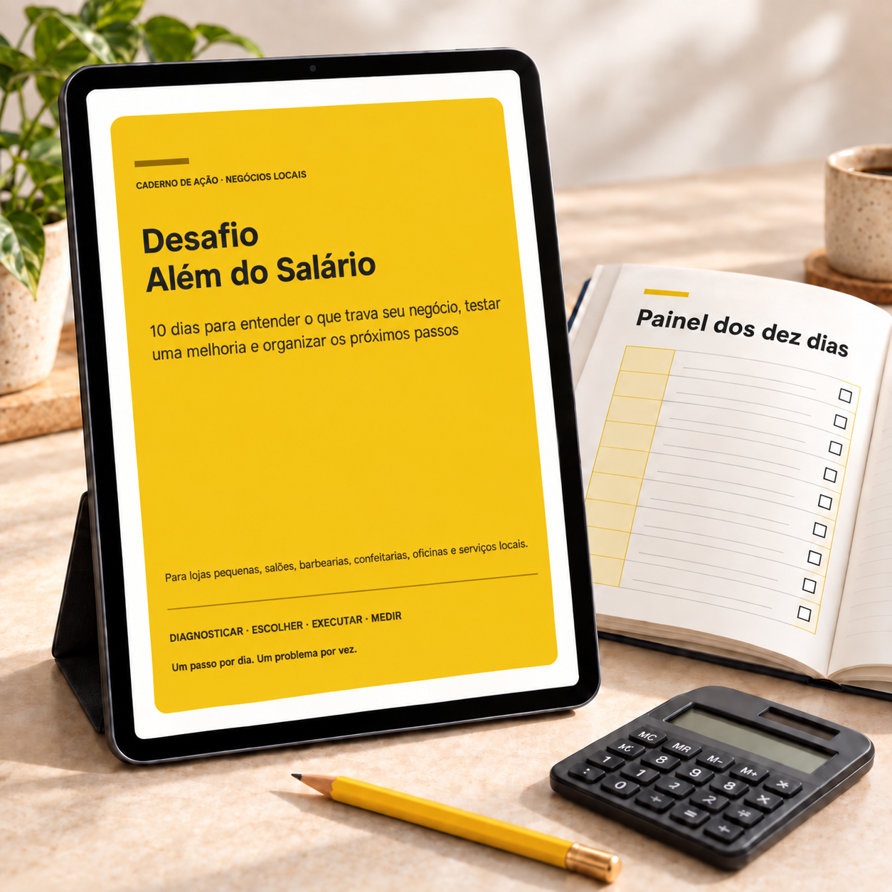

Enxergue seu ponto de partida
Faça um diagnóstico de clientes, atendimento, dinheiro e rotina. Identifique onde há mais dúvidas e lacunas.
SEU NEGÓCIO MERECE UM PRÓXIMO PASSO
Em 10 dias, transforme dúvidas em ações: faça um diagnóstico, escolha uma prioridade e teste uma melhoria que caiba na sua rotina.
Quero começar meu desafioEbook digital · R$ 37 · Para pequenos negócios locais

PARECE COM A SUA ROTINA?
Quando tudo depende de você, é fácil passar o dia apagando incêndios. O primeiro passo é enxergar uma dificuldade concreta e escolher o que fazer com ela.
01O dinheiro entra, mas você não acompanha bem para onde ele vai.
02Clientes pedem informações e a conversa se perde pelo caminho.
03Você tem ideias para melhorar, mas tenta mudar tudo de uma vez.
04A rotina toma conta e os próximos passos ficam sempre para depois.
MENOS IDEIAS SOLTAS. MAIS DIREÇÃO.
O ebook combina orientação simples com fichas de trabalho para você registrar decisões e acompanhar o que acontece.
Faça um diagnóstico de clientes, atendimento, dinheiro e rotina. Identifique onde há mais dúvidas e lacunas.
Organize uma oferta, revise uma conversa ou ajuste um processo. Escolha uma ação concreta para testar.
Registre o que fez, o que observou e o próximo passo. Termine com um plano para continuar por 30 dias.
O CAMINHO DOS 10 DIAS
Precisa saber qual é o próximo passo. O desafio oferece uma sequência para adaptar ao seu negócio.
Começar por R$ 37Escolha a dificuldade que você vai trabalhar.
Observe situações reais e necessidades de quem compra.
Veja o dinheiro que entrou e os compromissos do negócio.
Examine os custos variáveis e o que sobra de cada venda.
Explique o que você entrega e para quem faz sentido.
Monte um roteiro simples e registre as conversas.
Acompanhe contatos de forma respeitosa e pertinente.
Defina uma ação e registre o que aconteceu.
Crie um checklist para uma tarefa recorrente.
Compare registros e prepare os próximos 30 dias.
O QUE VOCÊ RECEBE
Desafio Além do Salário — Edição Negócios Locais. Um material digital para trabalhar no seu próprio ritmo.
SEU PRÓXIMO PASSO PODE COMEÇAR AQUI
Se você tem um pequeno negócio e precisa organizar o que fazer primeiro, este desafio foi pensado para a sua rotina.
O objetivo é diagnosticar, testar e aprender. Melhorias nas vendas e no lucro dependem das condições do negócio e da execução.
10 dias para entender o que trava seu negócio, testar uma melhoria e organizar os próximos passos.
Valor do ebook
Quero comprar o ebookVocê será direcionado ao checkout da Kiwify para conferir as condições e finalizar sua compra.
Material para execução independente. Consultoria individual contratada separadamente.
ANTES DE COMEÇAR
O material foi pensado para negócios locais simples, como lojas, salões, barbearias, confeitarias, oficinas e prestadores de serviços. Os exercícios podem ser adaptados à sua rotina.
Não. O ebook usa linguagem simples e tarefas práticas. Você trabalha com informações do próprio negócio, sem precisar dominar ferramentas complexas.
Os dez dias organizam a sequência. Você pode avançar no seu ritmo e retomar de onde parou.
Clique em “Quero comprar o ebook” para abrir o checkout da Kiwify e consultar as condições de pagamento e entrega.
Não. O material orienta a execução independente. Ao final, há um convite opcional para conversar sobre uma consultoria, com escopo, condições e contratação separados.
Não existe garantia de vendas ou lucro. A proposta é ajudar você a identificar prioridades, executar uma melhoria e avaliar o que os registros mostram.
UM PASSO POR DIA. UM PROBLEMA POR VEZ.